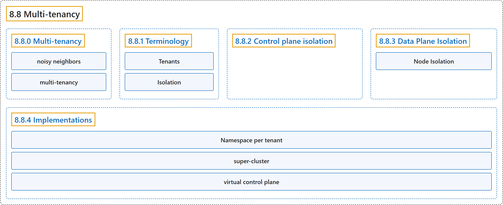

8.8 Multi-tenancy
Classification

Glossary
| Term | Definition | 中文翻译 | Source |
|---|---|---|---|
| 8.8 Multi-tenancy 多租户 |
(context) "Sharing clusters saves costs and simplifies administration." | （语境）共享集群可以节省成本，并简化管理。 | The Kubernetes Authors, n.d., "Multi-tenancy", para. 2 |
| 8.8.0 Multi-tenancy 多租户 |
(No definition) | （无定义） | The Kubernetes Authors, n.d., "Multi-tenancy" |
| noisy neighbors 吵闹的邻居 |
(context) "However, sharing clusters also presents challenges such as security, fairness, and managing noisy neighbors." | （语境）然而，共享集群也带来挑战，例如安全、公平以及管理吵闹的邻居。 | The Kubernetes Authors, n.d., "Multi-tenancy", para. 2 |
| multi-tenancy 多租户 |
"All these types of sharing are frequently described using the umbrella term multi-tenancy." | 所有这些共享方式常用总称多租户来描述。 | The Kubernetes Authors, n.d., "Multi-tenancy", para. 3 |
| 8.8.1 Terminology 术语 |
(No definition) | （无定义） | The Kubernetes Authors, n.d., "Terminology" |
| Tenants 租户 |
(context) "When discussing multi-tenancy in Kubernetes, there is no single definition for a "tenant"." | （语境）在讨论 Kubernetes 中的多租户时，并没有单一的定义来界定一个“租户”。 | The Kubernetes Authors, n.d., "Tenants", para. 1 |
| Isolation 隔离 |
(context) "There are several ways to design and build multi-tenant solutions with Kubernetes." | （语境）有多种方式可以用 Kubernetes 设计和构建多租户方案。 | The Kubernetes Authors, n.d., "Isolation", para. 1 |
| 8.8.2 Control plane isolation 控制平面隔离 |
"Control plane isolation ensures that different tenants cannot access or affect each others' Kubernetes API resources." | 控制平面隔离确保不同租户无法访问或影响彼此的 Kubernetes API 资源。 | The Kubernetes Authors, n.d., "Control plane isolation", para. 1 |
| 8.8.3 Data Plane Isolation 数据平面隔离 |
"Data plane isolation ensures that pods and workloads for different tenants are sufficiently isolated." | 数据平面隔离确保不同租户的 Pod 和工作负载得到充分隔离。 | The Kubernetes Authors, n.d., "Data Plane Isolation", para. 1 |
| Node Isolation 节点隔离 |
"Node isolation is another technique that you can use to isolate tenant workloads from each other." | 节点隔离是另一种技术，可用来把租户工作负载相互隔离。 | The Kubernetes Authors, n.d., "Node Isolation", para. 1 |
| 8.8.4 Implementations 实现方式 |
"There are two primary ways to share a Kubernetes cluster for multi-tenancy: using Namespaces (that is, a Namespace per tenant) or by virtualizing the control plane (that is, virtual control plane per tenant)." | 共享 Kubernetes 集群实现多租户主要有两种方式：使用命名空间（即每租户一个命名空间），或虚拟化控制平面（即每租户一个虚拟控制平面）。 | The Kubernetes Authors, n.d., "Implementations", para. 1 |
| Namespace per tenant 每租户一个命名空间 |
(context) "As previously mentioned, you should consider isolating each workload in its own namespace" | （语境）如前所述，你应考虑把每个工作负载隔离在各自的命名空间中 | The Kubernetes Authors, n.d., "Namespace per tenant", para. 1 |
| super-cluster 超级集群 |
(context) "This cluster is often referred to as a super-cluster (or sometimes as a host-cluster)." | （语境）这个集群常被称为一个超级集群（有时也称一个宿主集群）。 | The Kubernetes Authors, n.d., "Virtual control plane per tenant", para. 2 |
| virtual control plane 虚拟控制平面 |
"Since a tenant’s control-plane is not directly associated with underlying compute resources it is referred to as a virtual control plane." | 由于租户的控制平面并不直接关联底层计算资源，它被称为一个虚拟控制平面。 | The Kubernetes Authors, n.d., "Virtual control plane per tenant", para. 2 |
References
The Kubernetes Authors. (n.d.). Multi-tenancy. Kubernetes Documentation. Retrieved October 31, 2026, from https://kubernetes.io/docs/concepts/security/multi-tenancy/